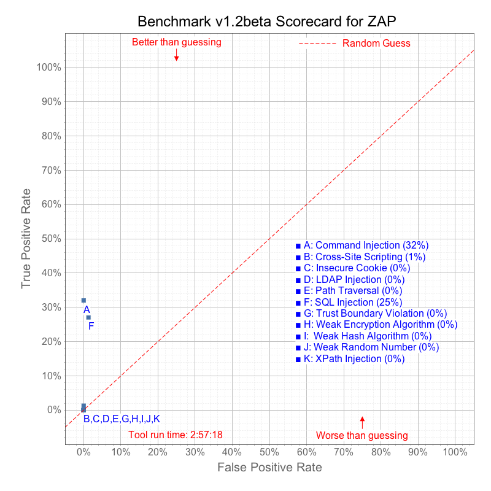

The OWASP Benchmark is a test suite designed to evaluate the speed, coverage, and accuracy of automated vulnerability detection tools. Without the ability to measure these tools, it is difficult to understand their strengths and weaknesses, and compare them to each other. The Benchmark contains over 20,000 test cases that are fully runnable and exploitable. The following is the scorecard for the tool ZAP against version 1.2beta of the Benchmark. It shows how well this tool finds true positives and avoids false positives in the Benchmark test cases.
For more information, please visit the OWASP Benchmark Project Site. 
| Tool elapsed analysis time | 2:57:18 |
|---|---|
| Tool overall score (0-100) | 5.37% | Total test cases | 2793 |
| Download raw results | Actual Results |
| Category | TP | FN | TN | FP | Total | TPR | FPR | Score |
|---|---|---|---|---|---|---|---|---|
| Command Injection | 40 | 85 | 109 | 0 | 234 | 32.00% | 0.00% | 32.00% |
| Cross-Site Scripting | 3 | 231 | 278 | 0 | 512 | 1.28% | 0.00% | 1.28% |
| Insecure Cookie | 0 | 21 | 30 | 0 | 51 | 0.00% | 0.00% | 0.00% |
| LDAP Injection | 0 | 34 | 25 | 0 | 59 | 0.00% | 0.00% | 0.00% |
| Path Traversal | 0 | 124 | 132 | 0 | 256 | 0.00% | 0.00% | 0.00% |
| SQL Injection | 66 | 178 | 228 | 3 | 475 | 27.05% | 1.30% | 25.75% |
| Trust Boundary Violation | 0 | 79 | 41 | 0 | 120 | 0.00% | 0.00% | 0.00% |
| Weak Encryption Algorithm | 0 | 122 | 116 | 0 | 238 | 0.00% | 0.00% | 0.00% |
| Weak Hash Algorithm | 0 | 123 | 129 | 0 | 252 | 0.00% | 0.00% | 0.00% |
| Weak Random Number | 0 | 228 | 329 | 0 | 557 | 0.00% | 0.00% | 0.00% |
| XPath Injection | 0 | 19 | 20 | 0 | 39 | 0.00% | 0.00% | 0.00% | Totals | 109 | 1244 | 1437 | 3 | 2793 | 5.48% | 0.12% | 5.37% |
| True Positive (TP) | Tests with real vulnerabilities that were correctly reported as vulnerable by the tool. |
|---|---|
| False Negative (FN) | Tests with real vulnerabilities that were not correctly reported as vulnerable by the tool. |
| True Negative (TN) | Tests with fake vulnerabilities that were correctly not reported as vulnerable by the tool. |
| False Positive (FP) | Tests with fake vulnerabilities that were incorrectly reported as vulnerable by the tool. |
| True Positive Rate (TPR) = TP / ( TP + FN ) | The rate at which the tool correctly reports real vulnerabilities. Also referred to as Precision, as defined at Wikipedia. |
| False Positive Rate (FPR) = FP / ( FP + TN ) | The rate at which the tool incorrectly reports fake vulnerabilities as real. |
| Score = TPR - FPR | Normalized distance from the random guess line. |